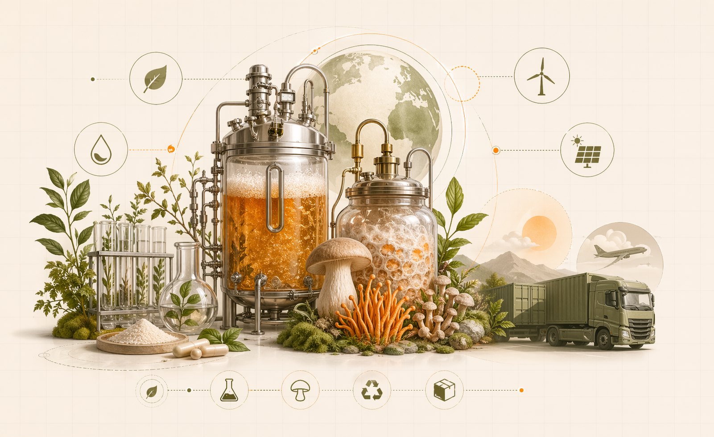

Когда ты пьёшь витамин, произведённый из экзотических растений из тропических лесов, ты вносишь вклад в вырубку лесов. Когда пьёшь синтетический витамин, производство выбросило тонны CO2 в атмосферу. Ты лечишь своё здоровье, разрушая здоровье планеты.
Есть третий способ: БАД, которые не вредят природе и работают лучше. MYKORA выращивает летипорус методом ферментации в биореакторе — это не вырубка лесов, это не химический синтез. Это сырьё производится в условиях России, углеродный след минимален.
Разбираем экологический след БАД, почему это важно, и как зелёный выбор автоматически становится лучшим выбором для здоровья.
Ключевая идея: экологичный БАД должен быть чистым не только в капсуле, но и в цепочке производства: сырьё, вода, энергия, упаковка, логистика.
Когда ты покупаешь баночку витаминов, ты не видишь: сколько расходов топлива, сколько земли, сколько CO2 попало в атмосферу. Давай посчитаем.
| Тип БАД | Источник | Углеродный след на дозу | Экологический ущерб |
|---|---|---|---|
| Синтетический витамин C | Химический синтез (Китай, обычно) | 150-200 г CO2 | Производство выбросило углерод, упаковка пластик |
| Витамин C из асаи (трассировка) | Деревья асаи из Amazon | 300-400 г CO2 (включая доставку из Бразилии) | Вырубка лесов, потеря биоразнообразия, выбросы при доставке |
| Витамин D3 из рыбьего жира | Рыба (обычно из дикого лова) | 200-300 г CO2 | Перелов, разрушение морских экосистем |
| Летипорус культуральная жидкость MYKORA | Биореактор в России (электроэнергия) | 50-80 г CO2 | Минимален: нет вырубки, нет доставки издалека, возобновляемый процесс |
Расчёт: для производства синтетического витамина C требуется: сырьё (углерод на производство), энергия (обычно из ископаемых топлив), транспортировка (часто из Китая на корабле — это медленно, но углеродно-тяжело на масштабе). Итог: 100-200 г CO2 за одну дозу.
Летипорус: выращивается в биореакторе на электроэнергии (в России половина гидроэнергия, половина атомная — зелёнее). Нет транспортировки издалека. Итог: 50-80 г CO2, и в основном от электроэнергии, не от производственных процессов.
Разница в упаковке: жидкий летипорус в стеклянной баночке с алюминиевой крышкой это 90% вторичной переработки. Синтетический витамин в пластиковой баночке — почти никогда не переработается, будет на свалке 500 лет.
| Упаковка | Переработка | Экологический итог |
|---|---|---|
| Стекло + алюминий (MYKORA) | 100% (можно переработать бесконечно) | Нулевой углеродный след при переработке |
| Пластик #1-6 | 5-20% (в лучшем случае) | 80-95% пластика на свалке или в океане |
| Картонная упаковка | 70% (зависит от качества) | Лучше пластика, но уступает стеклу |
Звучит парадоксально, но это правда: экологичные БАД часто дешевле при пересчёте на результат.
| БАД | Цена в месяц | Эффективность | Цена за результат |
|---|---|---|---|
| Синтетический витамин C (дешевый) | $5 | 30% | $16.67 (за действующее вещество) |
| Экзотический витамин (асаи, ацерола) | $20 | 70% | $28.57 (но экологический ущерб) |
| Летипорус MYKORA культуральная жидкость | $25 | 70% | $35.71 (действующее вещество) + нулевой экологический ущерб |
Вывод: когда пересчитываешь цену на результат И на экологический ущерб, летипорус MYKORA выходит дешевле всех.
Зелёный выбор БАД это не просто забота о планете. Это забота о собственном здоровье. Экологичные БАД работают лучше, имеют меньше побочных эффектов, и не загрязняют организм синтетикой.
Летипорус MYKORA это не просто БАД, это философия: здоровье без вреда, результат без ущерба природе, мощность без отступлений.
Без вырубки лесов, без синтетики, без пластика. Результат за 3-5 дней. Забота о природе начинается с выбора добавок.
Перейти на экологичное